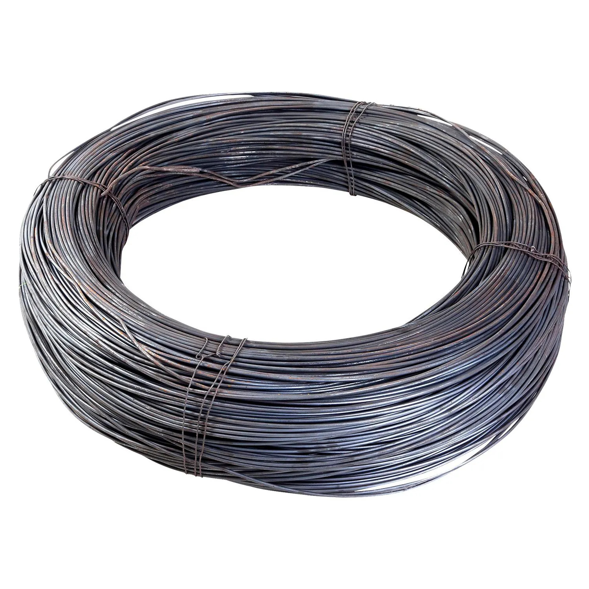

Alambre recocido N.º 16

Alambre de acero sometido a un tratamiento que mejora su flexibilidad. Se usa principalmente para sujetar armaduras de acero antes del vaciado del concreto. Se comercializa en rollos y puede organizarse en cajas o lotes.